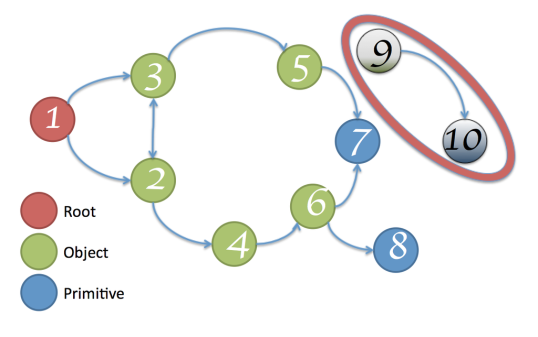
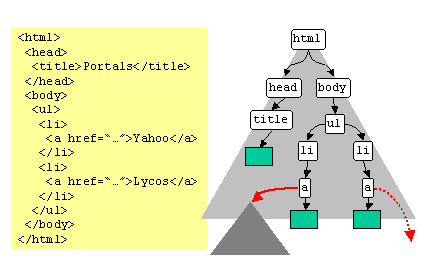
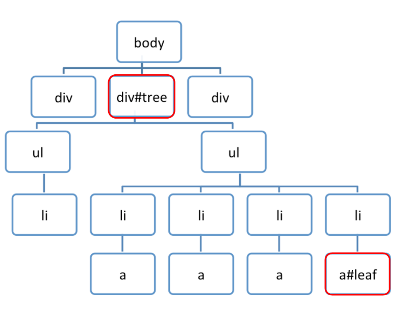

Google DevTools를 이용한
Web Application Memory 분석법
https://developers.google.com/web/tools/chrome-devtools/profile/memory-problems/memory-diagnosis?hl=en
Memory Leak
a memory leak is a type of resource leak that occurs when a computer program incorrectly manages memory allocations in such a way that memory which is no longer needed is not released
Memory Leak 징후
- 페이지가 느리다.
- 페이지가 시간이 지날수록 점점 느려진다.
- 단말기 마다, 환경마다 증상의 차이가 크다.
- 페이지의 동작이 잠시 멈춘다.
- 브라우저가 죽는다(crashed)
왜 Memory leak은 발생하는가?
잘못된 개발 습관
전 별로 신경쓰지 않았는데...
잘 되던데요 ^^
네. 맞습니다
모던 브라우저는 Reloading시 메모리를 효과적으로 릴리즈합니다.
하지만, 당신이 개발하는 서비스가 SPA라면 상황은 달라집니다
SPA : Single-Page ApplicationMemory
Think of memory as a graph

Types
-
Primitive types : Number, Boolen, String다른 값의 reference를 갖을 수 없음
-
Object(key-value), Array(number key-value)다른 값의 reference를 가짐Memory leak 관리 대상
Root는 window 객체
Object는 Object와 Array
GC (Garbage Collection)
Root와 연결이 끊어진 node의 메모리를 해제하는 작업
Memory Leak을 제거 하는 방법
사용한 Object, Array의 Reference가
Root와 연결되지 않도록 한다.
Memory Leak이 발생 할 수 있는
3가지 개발 패턴
1. Timers
var buggyObject = {
callAgain: function () {
var ref = this;
var val = setTimeout(function () {
console.log('Called again: '
+ new Date().toTimeString());
ref.callAgain();
}, 1000);
}
};
buggyObject.callAgain();
buggyObject = null; // buggyObject reference 제거
timer 내부에서 buggyObject reference가 여전히 존재함
var buggyObject = {
callAgain: function () {
function loopFunc() {
console.log('Called again: '
+ new Date().toTimeString());
setTimeout(loopFunc, 1000);
}
setTimeout(loopFunc, 1000);
}
};
buggyObject.callAgain();
buggyObject = null; // buggyObject reference 제거
timer 내부에서 buggyObject reference를 사용하지 않도록 수정
2. Closures
외부함수의 변수에 접근할 수 있는 내부 함수.
함수와 그 함수가 만들어진 환경으로 이루어진 객체
var a = function () {
var largeStr = new Array(1000000).join('x');
return function () {
return largeStr;
};
}();
반환된 closure는 largeStr 변수의 레퍼런스가 가지고 있음
하지만, 무분별한 Closure는 Memory leak을 유발합니다.
3. DOM leaks
DOM node는 DOM Tree에서 삭제되었지만, 여전히 DOM node의 reference가 존재하는 경우

var select = document.querySelector;
var treeRef = select("#tree");
var leafRef = select("#leaf");
var body = select("body");
body.removeChild(treeRef);
treeRef = null;
leafRef = null;
treeRef 때문에, GC가 발생하지 않음
leafRef 때문에, GC가 발생하지 않음
Event listeners
var Area = document.getElementById('area');
function addNote(index) {
var note = document.createElement('DIV');
note.id = 'note' + index;
note.innerHTML = '<div>노트 입니다.<button class="close"></div>';
Area.appendChild(note);
note.querySelector('button.close').addEventListener('click', onClickClose);
}
function removeNode(index) {
var note = document.getElementById(id);
Area.removeChild(footnote);
note.querySelector('button.close').removeEventListener('click', onClickClose);
}
addNote(0); removeNode(0);
addNote(1); removeNode(1);
Chrome DevTools를 이용한
Memory Leak 분석하기
Shallow Size
array, string와 같이 직접적으로 메모리를 점유하고 있는 JavaScript 객체